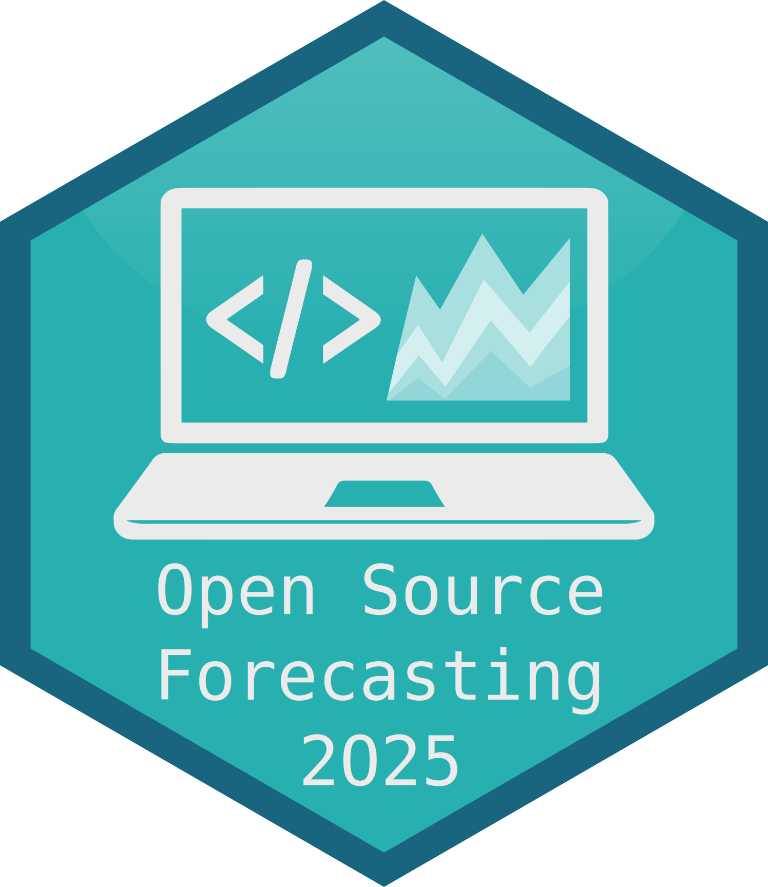

- Sander Weeteling: Photo
- Wolf Zimmermann: Cloud lit by the setting sun
- Meriç Dağlı: Photo

IIF Workshop on Open Source Forecasting
26th June 2025 @ IIF OSF
Organised by:
- Mitchell O’Hara-Wild
- Shanika Wickramasuriya
- Xiaoqian Wang
- Ivan Svetunkov
- Azul Garza Ramirez
- Resul Akay
- Bahman Rostami-Tabar
Welcome! 👋
Let’s chat open source forecasting software!
Workshop goals
- Foster collaboration
- Improve communication
- Discuss advancements
- Establish best practices
- Support future developers
Housekeeping
Safety
- Follow the code of conduct
- Please be careful of tripping hazards
- In-case of emergency evacuation follow Xiaoqian
Social media
We encourage you to post about the event on social media with the hashtag #iifosf2025
Event recording
This workshop is being recorded, and presentations will be published online on YouTube afterwards.
If you’d prefer your talk to not be published, email me.
Workshop topics
Forecasting frameworks
forecast, fable, sktime, aeon, Durbyn.jl
Forecast reconciliation
FoReco, bayesRecon, FlowRec
Implementing models
smooth, bsvars, StatsForecast
Machine learning
Neural networks, TSLib & OpenLTM, multimodel and contextual forecasting
Organising Committee

Mitchell O’Hara-Wild
General chair

Ivan Svetunkov
Programme chair

Bahman Rostami-Tabar
Event coordinator

Xiaoqian Wang
Local logistics

Azul Garza
Invitations & general Support

Resul Akay
Invitations & general Support

Shanika Wickramasuriya
Invitations & general Support
25 years of open source forecasting software
Twenty-five years ago, the only open source forecasting software available were the HoltWinters(), arima() and StructTS() functions in R. Now we have many R packages available that are widely used, a burgeoning number of Python packages, and a few Julia packages, along with C or C++ implementations of ETS, ARIMA and other well-known models. I will discuss the development of open source forecasting software over the years, and highlight areas needing attention.

Rob Hyndman
Presenter
Designing extensible forecasting frameworks
A well-designed interface is instrumental in making software easy to learn and use. The design of statistical software is inherently subjective, and there are many difficult decisions involved in creating interfaces that work cohesively within the intended domain. A forecasting framework sets out the design language for the forecasting workflow, guiding users conceptually about how different steps relate to one another. Making each element of the workflow extensible enables developers to implement new models, accuracy metrics, or other forecasting techniques that can be immediately used in conjunction with other forecasting elements. In this talk, I will examine the design decisions made when creating fable, the tidy time series forecasting successor of the forecast package.
Mitchell O'Hara-Wild
Presenter

Tony Bagnall
Discussant
Morning tea
Food and drink (yes, and coffee ☕) is available in the hallway.
Please no food or drinks near the seating.
FoReco: From foundations to frontiers
In many forecasting applications, producing multiple time series forecasts across different aggregation levels (such as regions, product categories, or time scales) is both common and necessary. However, independently generated forecasts often fail to respect the underlying constraints linking these series, leading to inconsistencies that can compromise decision-making analyses. Forecast reconciliation addresses this challenge, while preserving or even improving forecast accuracy. FoReco is a dedicated open-source R package that systematically implements forecast reconciliation approaches, providing robust tools for obtaining coherent forecasts in a multivariate setting. It supports hierarchical, grouped, and general linearly constrained time series, and implements both classical and modern reconciliation approaches, including bottom-up, top-down, middle-out, and optimal combination methods. Its main features include full support for cross-sectional, temporal, and cross-temporal reconciliation, availability of both projection and structural formulations, and a wide range of flexible covariance matrices based on sparse structures. Additional features include methods for non-negative reconciliation, reconciliation under immutable constraints, and both point and probabilistic forecast reconciliation using parametric or non-parametric approaches.

Daniele Girolimetto
Presenter

Charupriya Sharma
Discussant
Probabilistic forecast reconciliation with bayesRecon
Forecasts generated for each series in a hierarchy often violate aggregation constraints. The packages bayesRecon (R) and bayesreconpy (Python) implement probabilistic forecast reconciliation via conditioning for hierarchical time series. Our packages reconcile probabilistic forecasts to ensure coherence across the hierarchy. They support different types of base forecasts: Gaussian, continuous non-Gaussian, discrete. They also support mixed hierarchies with discrete and continuous forecasts on different levels. The interface is unified across both languages, and the packages are released under an LGPL (≥3) license. This presentation will introduce the software and demonstrate core functionalities with both R and Python short tutorials.

Lorenzo Zambon
Presenter

Anubhab Biswas
Presenter

Olivier Sprangers
Discussant
Lunch
Follow us to the Beihang University canteen!
Forecasting smoothly with smooth() package
ADAM (Augmented Dynamic Adaptive Model) is a flexible framework for forecasting using dynamic models. It merges ARIMA and ETS and extends them by implementing explanatory variables, supporting multiple frequencies, and mixture distributions for intermittent demand. ADAM supports a variety of distributions, including Normal, Generalised Normal, Inverse Gaussian, Gamma and others. It allows users to estimate models using a variety of techniques, including regularisation, recursive and direct strategies, and supports custom loss functions, offering flexibility for research purposes. It also supports a variety of ways to produce forecasts for different situations. ADAM is implemented in the smooth package for R. It is agnostic of the provided data and works with vectors, ts, zoo, tsibble classes, together with matrix, data.frame, data.table and others.
Kandrika Pritularga
Presenter

Adam Wang
Discussant
Integrating Smooth Capabilities into Python
The smooth package provides a comprehensive state-space framework for forecasting, centered on the Augmented Dynamic Adaptive Model (ADAM). ADAM offers a unified structure that integrates and extends classical time series models like ETS, ARIMA, and regression beyond their standard implementations. Originally developed within the R statistical environment, the growth of Python’s forecasting ecosystem motivated the development of a native implementation for its expanding community of researchers and practitioners. This presentation focuses on the engineering specifics of implementing the smooth framework in Python. We explain the architecture, which utilizes the original C++ backend, and detail the refactoring process used to transform the initial translation into an idiomatic, object-oriented Pythonic API.
Filotas Theodosiou
Presenter

Pablo Montero-Manso
Discussant
Afternoon tea
Food and drinks are available in the hallway.
Please no food or drinks near the seating.
bsvars.org design concept: R packages for Predictive Analyses using Bayesian Structural Vector Autoregressions
bsvars.org is a family of R packages offering a comprehensive framework for Bayesian Structural Vector Autoregression analysis commonly used in empirical macroeconomics and finance. It is designed to serve diverse user communities from academic researchers to applied economists at policy institutions. This software ecosystem combines the convenience of data analysis using R with computational efficiency of compiled C++ code, leveraging packages Rcpp and RcppArmadillo to boost performance of computationally intensive Bayesian estimation procedures.
Adam Wang
Presenter
Rob Hyndman
Discussant
Open Source Forecasting in Python: A Survey of Tools, Trends, and Trade-offs
As time series forecasting becomes increasingly central to data-driven decision-making across industries, the Python ecosystem has seen rapid growth in tools tailored to this task.
This talk presents a comprehensive review of the current landscape of open-source forecasting packages in Python, covering frameworks, toolboxes, and few-model-packages.
We will explore not just the technical capabilities - such as model variety, composability, unified interfaces, performance, scalability, and ease of use - but also the governance and openness of these tools.
Attendees will gain insight into how openly governed community projects compare with corporate-backed initiatives, and how the availability (or restriction) of pretrained models, APIs, and infrastructure influences adoption and innovation. The talk also critically examines the trend of gated forecasting models, where core capabilities are locked behind APIs or proprietary layers, which is seeing an especial proliferation around so-called “foundation models”, versus fully open-source implementations of the same technologies.
By the end of the session, participants will leave with a nuanced understanding of the strengths, trade-offs, and pitfalls in the current Python forecasting ecosystem, and practical guidance for selecting tools aligned with their organizational values and technical requirements.
Anirban Ray
Presenter

Franz Király
Presenter

Christoph Bergmeir
Discussant
See you tomorrow!
Campus entry requirements
Don’t forget to bring your passport (or Chinese ID card) for entry!
Forecasting 2.0: A Framework for Near-Optimal Time Series Forecasting and Inference via Pre-Trained Models
We introduce a new framework for time series modeling that approximates optimal performance in both forecasting and inference. Implementations are available in both R and Python. We will present the underlying statistical and software design principles—what we call a grammar for optimal time series model design. Traditional models such as ARIMA and Exponential Smoothing rely on estimation techniques like Maximum Likelihood, which do not directly optimize for forecast error or bias. This disconnect is even more pronounced in tasks such as model selection and model combination, where optimality is rarely addressed.
Our framework leverages neural networks trained on simulations of time series models to act as near-optimal estimators and forecasters tailored to specific optimality criteria. A suite of pre-trained networks is provided as drop-in replacements for classical estimators commonly found in statistical software. These networks, even when approximating simple statistical models, achieve state-of-the-art performance on major time series benchmark datasets—outperforming both traditional estimators and more complex neural architectures, including foundation models.
The framework is highly extensible, making it easy to adapt to non-Gaussian distributions, complex nonlinear dynamics, censoring, time-varying parameters, and other scenarios that are easy to simulate but intractable analytically. Importantly, the entire framework is fully open: all model weights, architectures, training data, and pipelines are open-sourced and designed to be trainable on consumer-grade hardware.
Pablo Montero-Manso
Presenter
Kandrika Pritularga
Discussant
The aeon toolkit for time series machine learning
aeon is an open source python toolkit supported by funding agencies in the UK (EPSRC) and Frandce (INRIA). We have a strong group of research-focused core developers comprising seven different nationalities, alongside a broad and expanding user base. aeon includes modules for numerous time series machine learning tasks: classification, clustering, regression, anomaly detection, segmentation, and similarity search, in addition to a range of supporting modules including benchmarking, networking, and transformations. We have recently replaced our legacy forecasting module—which relied on wrappers around other packages—with a completely different new module. Our goal is to maintain a clear structure emphasising custom implementations of the latest machine learning forecasting methods. Our forecasting development team currently includes three academic core developers, a PhD student who joined in 2024, and two Google Summer of Code interns. However, our expertise primarily lies in computer science and machine learning rather than forecasting specifically, and we have not previously published in the forecasting field. This talk will provide a brief overview of aeon and outline our roadmap for the forecasting module. We greatly welcome feedback and suggestions regarding future directions for forecasting in aeon.
Anthony Bagnall
Presenter
Mitchell O’Hara-Wild
Discussant
Morning tea
Food and drink (yes, and coffee ☕) is available in the hallway.
Please no food or drinks near the seating.
LLMs Meet Time Series Foundation Models: Are We Ready for Forecasting Agents?
AI agents are transforming domains from code generation to autonomous research workflows, yet time series forecasting remains largely unexplored. In this talk, we unpack what AI agents are, how they function, and why they’ve become a central topic in multimodal AI.
We’ll revisit core ideas in agent architectures, trace their emergence alongside foundation models, and explore why forecasting presents a distinctive and promising frontier for agent-based design. This conceptual talk is grounded in the open-source forecasting ecosystem and aims to spark a broader conversation: Are we ready for forecasting agents? And if not, what would it take to be?
Azul Garza
Presenter

Filotas Theodosiou
Discussant
Deep Time Series Forecasting: Tools and Open Challenges
Can neural networks outperform traditional statistical methods, or do they merely add complexity without consistent gains? In this talk, I will review the progress in deep time series models in the past few years and introduce TSLib and OpenLTM, which are widely used open-source libraries for deep learning researchers. Moreover, this talk will also cover some opening discussions for future research on deep learning-based time series forecasting.

Haixu Wu
Presenter

Arjun Ashok
Discussant
Lunch
Follow us for a buffet lunch at Beihang University!
Hierarchical Forecast Reconciliation on Networks: A Network Flow Optimization Formulation
The problem of hierarchical forecasting with reconciliation requires that we forecast values that are part of a hierarchy (e.g.~customer demand on a state, district or city level), and there is a relation between different forecast values (e.g.~all district forecasts should add up to the state forecast). State of the art forecasting provides no guarantee for these desired structural relationships. Reconciliation addresses this problem, which is crucial for organizations requiring coherent predictions across multiple aggregation levels. Current methods like minimum trace (MinT) are mostly limited to tree structures and are computationally expensive for large-scale problems. We introduce FlowRec, which reformulates hierarchical forecast reconciliation as a network flow optimization problem, enabling forecasting on generalized network structures and relationships beyond trees.
Charupriya Sharma
Presenter
Daniele Girolimetto
Discussant
Context-Aided Forecasting: Progress So Far and Next Big Challenges
Classical and modern forecasting models based on numerical data have seen widespread success in a range of applications. While historical numerical data and engineered covariates provide a start, they fail to convey the complete context for reliable and accurate predictions. Human forecasters frequently rely on additional information, such as background knowledge and constraints, which can flexibly be communicated through natural language. My talk will be on this setting of “context-aided forecasting”, where the goal is to produce statistical forecasts by incorporating all relevant context in natural language. I will first discuss our efforts on building CiK (short for “Context is Key”), a forecasting benchmark that pairs numerical data with diverse types of carefully crafted textual context, with a strict requirement for models to integrate both modalities to produce accurate forecasts. I will discuss the Region-of-Interest CRPS, a proper scoring rule we propose, which prioritizes context-sensitive windows and accounts for constraint satisfaction. We evaluate a range of approaches on CiK, including statistical models, time series foundation models, and LLM-based forecasters, and propose a simple yet effective LLM prompting method that outperforms all other tested methods on our benchmark. Our experiments demonstrate surprising performance when using LLM-based forecasting models and also reveal some of their critical shortcomings, especially with respect to efficiency. I will also present new results on the benchmark, including simple methods that improve the zero-shot performance of LLMs through forecast-bootstrapping and in-context learning. Next, I will discuss other efforts from the community on benchmarks and methods for context-aided forecasting, and expand on our ongoing work on hybrid methods combining time series foundation models and LLMs for accurate and efficient context-aided forecasting. Finally, I will discuss the next big challenges in this space, centering around building interactive, agentic systems for forecasting and analysis and their potential in democratizing powerful forecasting tools, making them significantly more accurate and accessible.
Arjun Ashok
Presenter

Joaquin Amat Rodrigo
Discussant
Afternoon tea
Food and drinks are available in the hallway.
Please no food or drinks near the seating.
Durbyn.jl: A Julia Framework for Time Series Forecasting
Durbyn.jl is a lightweight, modular, and fully Julia-native framework for time series forecasting. Designed with researchers, educators, and practitioners in mind, Durbyn.jl combines clarity with computational power, offering a rich suite of classical models and statistical tools within a clean, extensible architecture.
Resul Akay
Presenter

Yangzhuoran Yang
Discussant
A Look Under the Hood of StatsForecast
StatsForecast is an open-source Python library that provides a wide range of statistical and econometric forecasting models. It is one of the most widely used forecasting libraries in the field, with over 20 million downloads and more than 4,000 GitHub stars.
In this workshop, we’ll take a look under the hood of StatsForecast. We’ll explain its architecture and what makes it so fast and scalable. We will also examine the implementations of the main model families: ARIMA, ETS, Theta, MSTL, baseline models, and models for sparse and intermittent series.
StatsForecast was recently featured in the Python edition of Forecasting: Principles and Practice, a key reference in the field. This open-source book is available at https://otexts.com/fpppy/ and represents an important part of StatsForecast’s history, as the library began as a Python implementation of many models from the forecast R package.

Mariana Menchero García
Presenter
Resul Akay
Discussant
Unsplash credits
Thanks to these Unsplash contributors for their photos